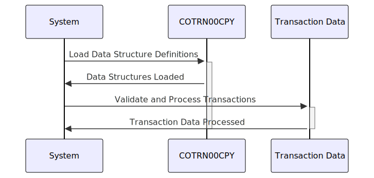

Gerado em: 1 de outubro de 2024
Título do Documento: Especificação da Estrutura de Dados de Transação
Descrição Resumida:
Este documento detalha a estrutura dos dados de transação dentro de um sistema financeiro, garantindo o registro e processamento padronizados das operações financeiras. Ele define dois layouts de dados, COTRN0AI para processamento interno e COTRN0AO para representação de saída, ambos contendo campos como ID da transação, data, descrição, valor e sinalizadores de seleção.
Histórias do Usuário:
Como analista de dados, preciso de uma maneira padronizada de acessar e analisar dados de transações para gerar relatórios precisos e obter insights sobre as tendências financeiras.
Épico Relacionado:
4 - Processamento de Transações
Requisitos Técnicos:
-
Estruturas de Dados:
COTRN0AI: Representação interna dos dados da transação.COTRN0AO: Representação orientada à saída dos dados da transação.
-
Campos:
TRNID: Identificador único da transação (string, 16 caracteres).TDATE: Data da transação (data, formato AAAAMMDD).TDESC: Descrição da transação (string, 26 caracteres).TAMT: Valor da transação (decimal, 12 dígitos).SEL####: Sinalizadores de seleção (caractere único, ‘Y’ ou ‘N’).
-
Validação de Dados:
- Validação de Tipo de Campo: Garanta que os dados inseridos em cada campo estejam de acordo com o tipo de dados especificado (string, data, decimal).
- Validação de Formato de Data: Valide
TDATE para estar em conformidade com o formato AAAAMMDD.
- Validação de Intervalo de Valor: Implemente verificações para garantir que
TAMT esteja dentro dos intervalos aceitáveis (se aplicável).
- Validação de Sinalizador de Seleção: Verifique se os campos
SEL#### contêm apenas os valores ‘Y’ ou ‘N’.
-
Transformação de Dados:
- Formatação para Saída (
COTRN0AO):
TDATE: Converta para um formato legível (por exemplo, DD/MM/AAAA).TAMT: Formate com os símbolos de moeda e separadores apropriados.
- Conversão de Dados (se aplicável): Se estiver interagindo com sistemas que usam diferentes representações de dados (por exemplo, decimal compactado), implemente as conversões necessárias.
Modelos Relacionados:
- Transação: Representa uma transação financeira.
trnId String: ID exclusivo da transação.trnDate Date: Data da transação.trnDesc String: Descrição da transação.trnAmt Decimal: Valor da transação.selFlags Array[Boolean]: Sinalizadores de seleção.
Configurações:
- Nenhuma especificada no código fornecido.
Melhorias de Código:
- Tratamento de Erros: Implemente rotinas robustas de tratamento de erros para capturar e registrar erros de validação, problemas de conversão de dados ou quaisquer exceções durante o processamento.
- Documentação: Adicione comentários abrangentes para explicar a finalidade, o uso e as regras de validação de dados para cada campo e estrutura.
- Modularidade do Código: Considere a criação de sub-rotinas separadas para validação de dados, transformação e formatação de saída para melhorar a organização e a capacidade de reutilização do código.
Melhorias de Segurança:
- Controle de Acesso: Implemente verificações de autorização para restringir o acesso aos dados da transação com base nas funções e permissões do usuário.
- Criptografia de Dados: Se estiver lidando com dados financeiros confidenciais, considere criptografar os dados em repouso e em trânsito.
- Registro de Auditoria: Registre todos os acessos a dados, modificações e falhas de validação para manter um registro de auditoria para fins de segurança e conformidade.
Diagrama Conceitual:

–Made by “Smart Engineering” (by Compass.UOL)–